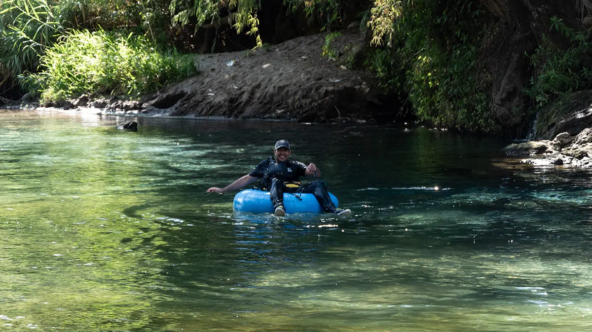
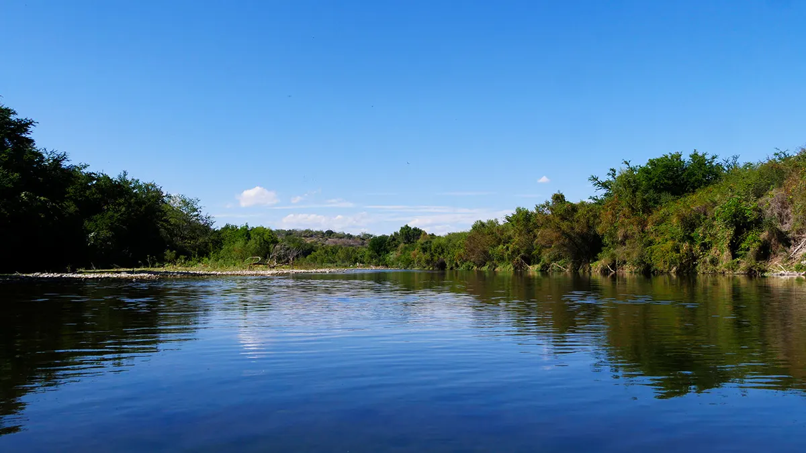

Descripción
Todo inicia en nuestro Punto de Encuentro donde te daremos la bienvenida, y te explicaremos como está organizado el recorrido, después de prepararnos con la ropa adecuada nos dirigiremos al Parque Nacional Grutas de Cacahuamilpa.
Nos tomaremos nuestro tiempo hasta dominar la técnica adecuada para navegar con el tubing, así como la comunicación que usaremos en el río.
Recorreremos 14 kilómetros de río con rápidos categoría II y III, esto dependiendo del nivel del río. Ya a la mitad del recorrido nos detendremos a disfrutar de un refrigerio y del agua cálida del río Amacuzac
Regresamos al Punto de Encuentro para disfrutar de un refrigerio y así cerrar la aventura.
Recomendaciones
.webp)
Incluye
El recorrido de Tubing Alto Amacuzac te incluye el traslado del Punto de Encuentro al río y del río al Punto de Encuentro.
Así como el equipo necesario para la actividad como chaleco de flotación y casco.
Entrada al Parque Nacional Grutas de Cacahuamilpa
Un refrigerio en el río y al final del recorrido.
Ríos Mexicanos te incluye en tu recorrido un seguro en caso de accidentes en el río.
Que traer
Ropa, el recorrido se realiza en una zona cálida, por ello es bueno traer ropa adecuada para protegerse del sol, pero también apta para nadar, por ejemplo: licras de tela sintéticas, calzado para mojar con agujetas y suela gruesa. Además de una muda de ropa seca para después del río.
Es importante que si estas bajo algún medicamente, no olvides traerlo y mantenernos informados, del mismo modo, te recomendamos traer barras energéticas y bebidas para hidratarte.
Datos
Tubing Alto Amacuzac de Ríos Mexicanos tiene la finalidad de promover las actividades de aventura en la naturaleza, mostrando la belleza del río Amacuzac, así como la importancia de su protección y preservación, ya que es hogar y refugio de una gran diversidad de vida silvestre, tanto endemica como migratoria.
El recorrido es de 14 kilómetros de recorrido en el río.
La temporada de Tubing Alto Amacuzac va de Julio a Octubre.
Dificultad media, debido a los rápidos clase II y III, de dificil accesibilidad.
Observación de aves y fauna local.
De julio a octubre es temporada de agua alta, ideal para mayores de 16 años.
